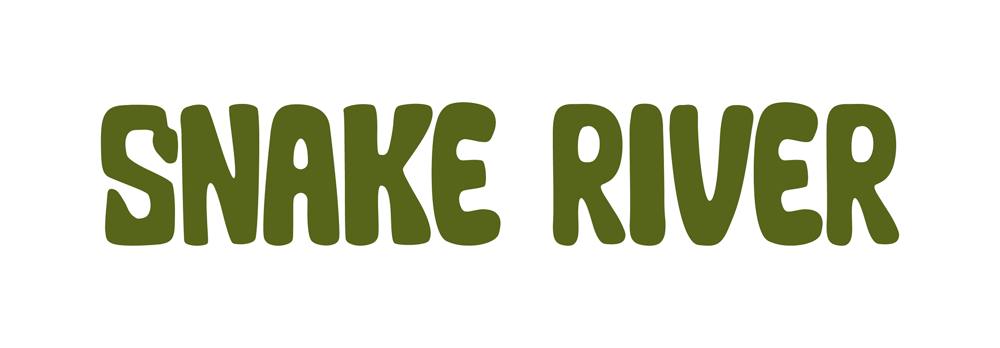
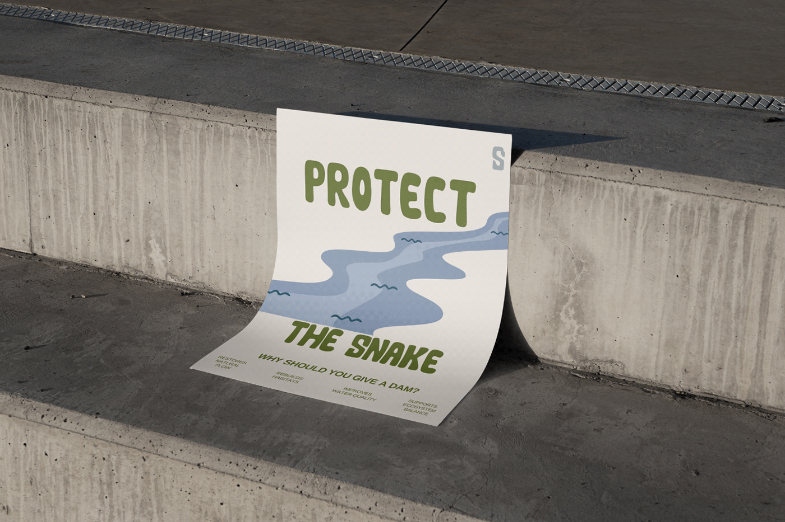
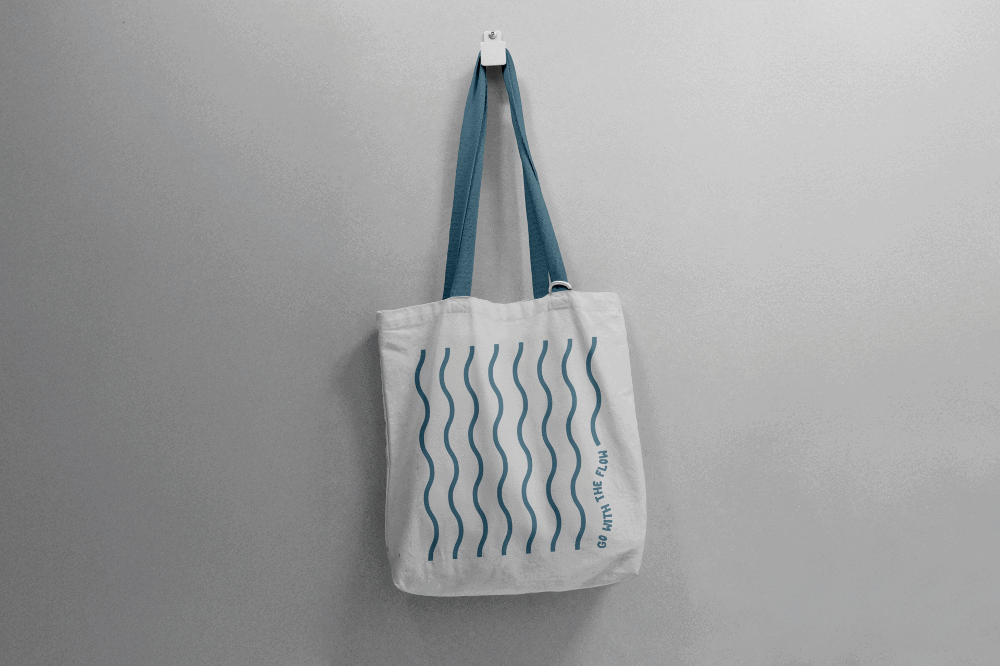
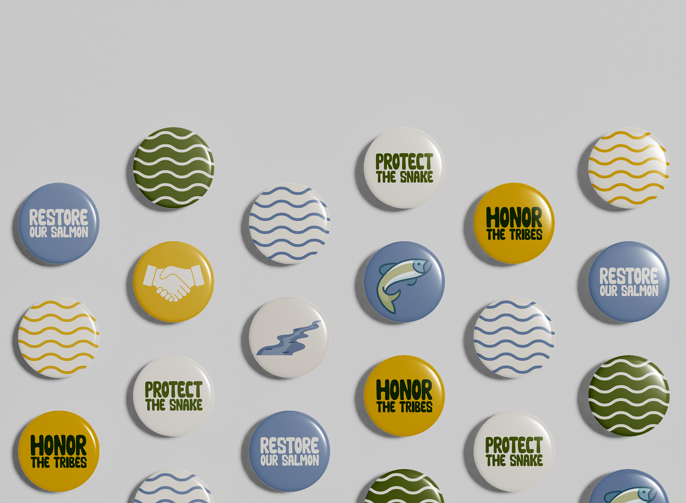
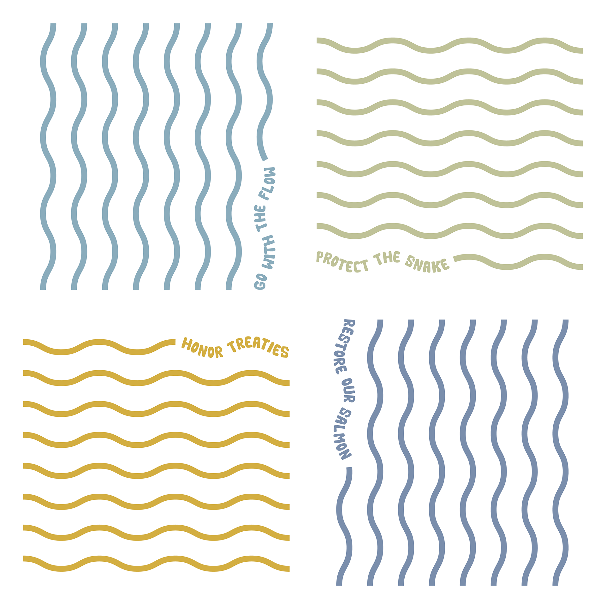

Design / Campaign
Snake River Campaign
A campaign about the four lower Snake River dams, the salmon and steelhead affected by them, and the communities whose relationship with the river was interrupted.


Campaign Idea
Restore, honor, protect.
The campaign advocates for breaching the Ice Harbor, Lower Monumental, Little Goose, and Lower Granite dams. Before the dams were built, treaties protected local tribes' rights to fish in the Snake River. The dams created warmer, slower water that is not suitable for salmon, disrupted sediment flow, and damaged fish habitats. The result is a major decline in salmon and steelhead populations, along with ongoing harm to surrounding tribes.
Three posters built around restore, honor, and protect, all tied together by the slogan "Why should you give a dam?"
Wave graphics represent the natural flow of the Snake River and the idea of going with the flow, not against it.



Contact